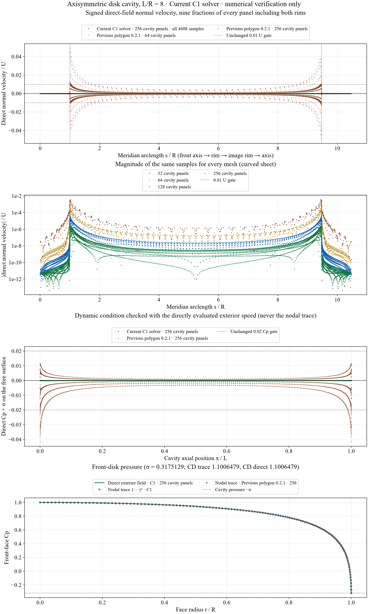
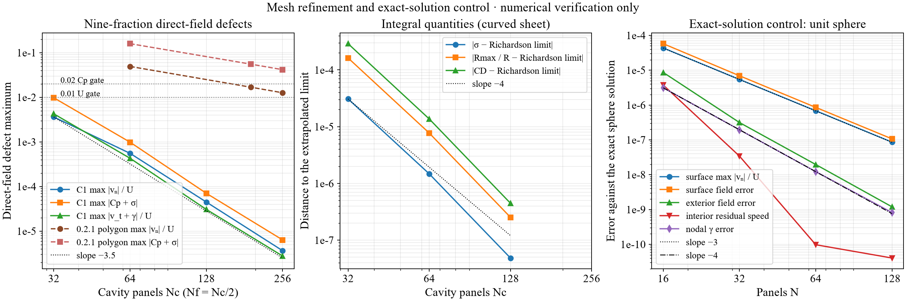
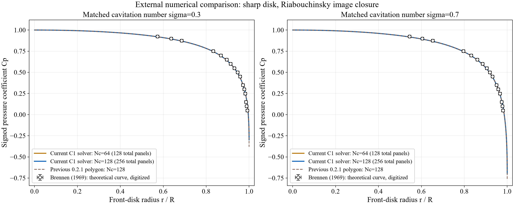

Numerical verification; limited experimental dimension comparison is available. The current C1 solver below is the curved-panel version used by the axisymmetric cavity application. “Previous polygon 0.2.1” identifies the preserved older solver. Four-point experimental comparison and its limitations. Full-model experimental qualification has not passed. These are results for a sharp disk with artificial Riabouchinsky image closure, not a cavitating aircraft wing or an unsteady collapse calculation.
The meridian is C1 continuous, with the sharp-rim departure represented explicitly; vortex-sheet strength is a continuous cubic spline. Three Gauss points per panel impose no penetration by weighted least squares. Newton iteration enforces the cavity-speed equations. Pressure in the checks comes from the directly evaluated exterior field, separately from the nodal sheet-strength reconstruction. All nine fractions of every panel, including both rims, remain in the test.
The same finite-mesh screens remain: maximum normal velocity ≤0.01U and maximum cavity pressure defect |Cp+σ|≤0.02. Exact-sphere, direct three-dimensional Biot–Savart integration, one-sided boundary limits, a separate SciPy implementation and mesh refinement are independent controls. Passing a sampled screen on one new case does not establish experimental accuracy.
R is physical disk radius; L is the full disk-to-image separation. Nc counts cavity bands and Nf bands on each disk; total meridian panels = Nc+2Nf. The case is nondimensional, U=1, with quadrature 24 near / 12 far and three collocation points per panel.
| Nc / Nf / total | σ | Rmax/R | CD | max |un|/U | max |Cp+σ| |
|---|---|---|---|---|---|
| 32 / 16 / 64 | 0.3175436678 | 1.973908118 | 1.100937895 | 0.00361 | 0.00974 |
| 64 / 32 / 128 | 0.3175143305 | 1.973753305 | 1.100661521 | 0.000553 | 0.000984 |
| 128 / 64 / 256 | 0.3175129057 | 1.973745851 | 1.100648299 | 4.48e-05 | 7.03e-05 |
| 256 / 128 / 512 | 0.3175128589 | 1.973745607 | 1.100647866 | 3.64e-06 | 6.34e-06 |


The physical front-disk Cp is compared at σ=0.3 and 0.7 with digitized theoretical curves in Figure 3 of Brennen’s numerical study. L/R is solved to the prescribed σ; no pressure points are fitted. Symbols show only the source’s visible coverage, with conservative scan-reading bounds ±0.006 in r/R and ±0.012 in Cp. Tunnel-wall curves are indistinguishable at the scan’s resolution; this is a limited figure-level comparison, not a precision pass against exact data.

Current C1 results versus four measured Waid disk-cavity dimensions, traced from the Alavi–Roohi review to the original report. Both coarse failures are retained; all finer cases pass numerical boundary screens. Closure and facility differences remain, so this is a limited comparison rather than full experimental qualification.
Polynomial extrema check the entire curved panel for reversals and intrusion, rather than checking nodes alone. False surface-trace declarations and nonfinite inputs are rejected. Optional audit locations can expand, but cannot remove, the mandatory nine fractions. A denser 15-fraction control from 0.001 to 0.999 also passes for L/R=8, Nc=64. Guard, dense-field and fresh SciPy-parity checks.
Domain controls at L/R=2, 3, 8 and 24 pass their sampled screens at Nc=32. L/R=12 at Nc=32 fails the unchanged pressure screen (0.02065); Nc=64 passes (0.002455). The application therefore defaults to 64 bands and asks for refinement when a case fails. It does not accept every case automatically. Complete domain-control records.
No viscosity, nuclei, tunnel blockage, natural smooth-body detachment, re-entrant jet or unsteady closure is resolved. The separate two-dimensional hydrofoil/BV-detachment solver remains a research prototype with rejected branches; this axisymmetric improvement does not certify that solver.
Detailed equations and implementation note · Current source hashes and review status · Separate SciPy implementation · Preserved equation-source baseline.
node docs/hydrofoil-cavitation-lab/validation/c1-cavity-verify.cjs --full node docs/hydrofoil-cavitation-lab/validation/c1-reviewed-verify.cjs node docs/hydrofoil-cavitation-lab/validation/curved-cavity-ui-smoke.cjs python docs/hydrofoil-cavitation-lab/validation/reference/c1-cavity/python/axi_c1.py 8 32 - 24 12 python docs/hydrofoil-cavitation-lab/validation/plot-c1-cavity.py python docs/hydrofoil-cavitation-lab/validation/plot-c1-brennen.py
Numerical methods and kernel references: Kress (1990), graded Nyström discretization; NIST DLMF §19.12, elliptic-integral asymptotics; Brennen, developed-cavity models. The Python comparison uses SciPy elliptic functions, CubicSpline, SVD least squares and a fully reassembled Jacobian. The sphere, Biot–Savart and SciPy controls are numerical verification. The separate Waid comparison concerns measured characteristic dimensions with explicitly unmatched facility and closure conditions.